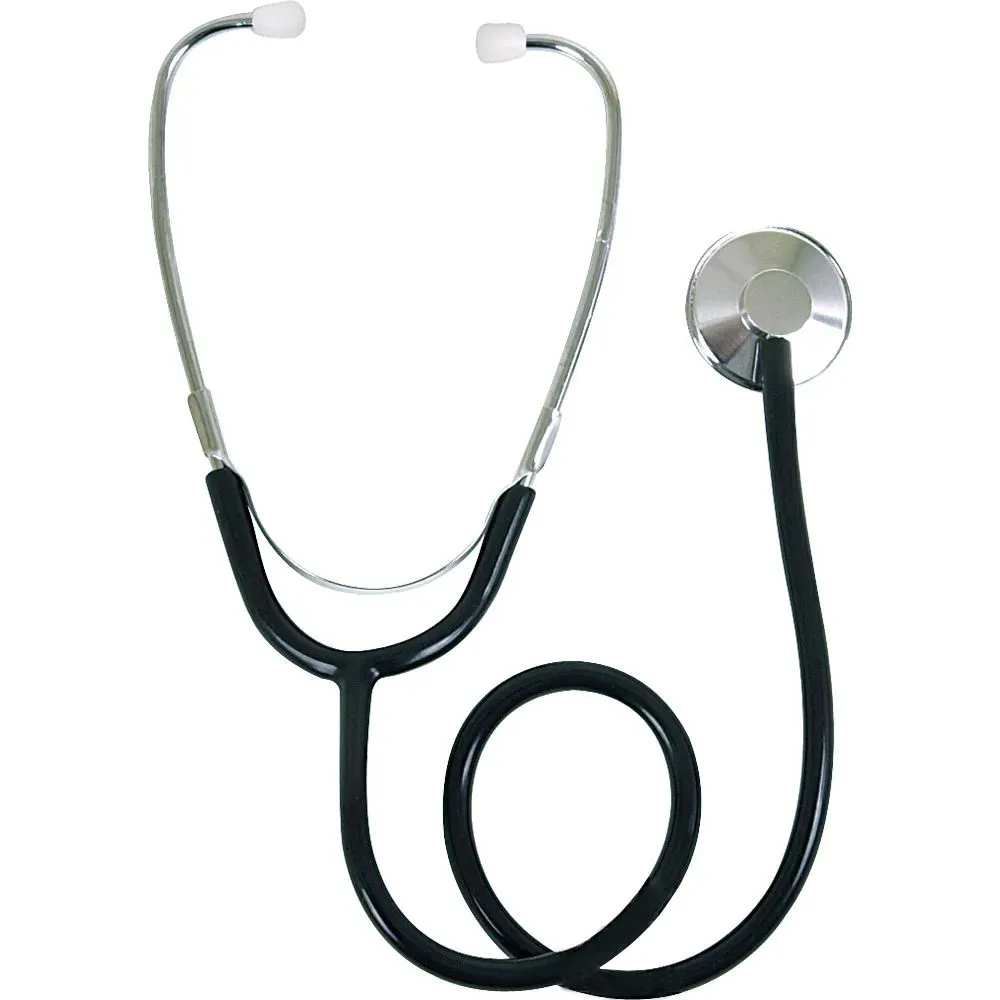
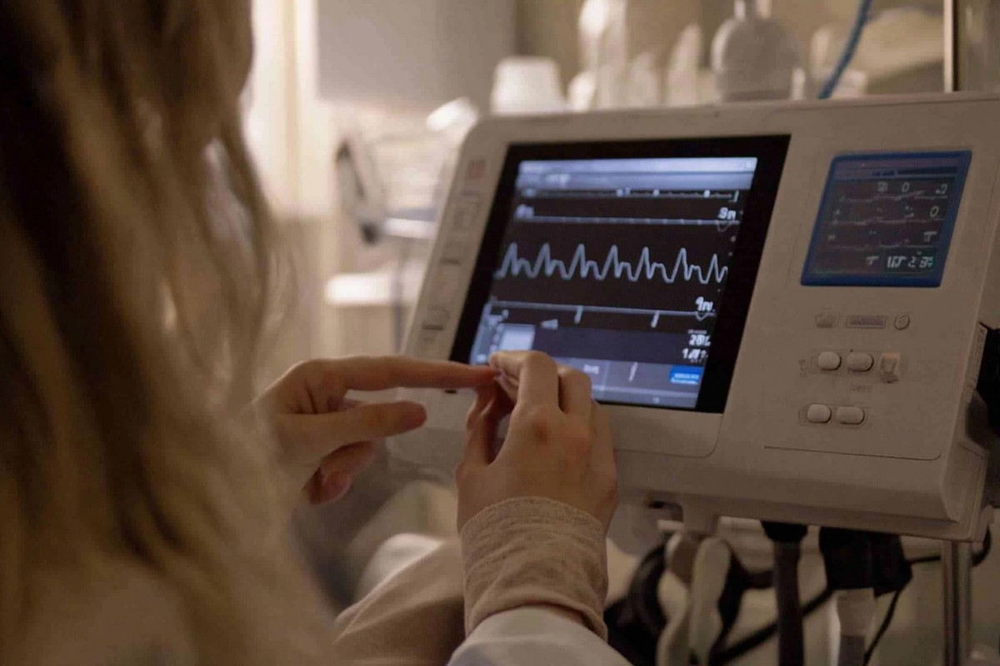

Um monitor cardíaco de pulso, ou seja, um relógio que mede seus batimentos cardíacos quando você encosta o dedo em um sensor no visor.
Não é um smartwatch moderno, mas um dispositivo básico para exercícios.
⚙️ Principais funções
Mede a frequência cardíaca (quando você encosta o dedo no sensor).
Mostra hora, data e calendário.
Cronômetro e alarme.
Conta calorias queimadas estimadas durante o treino.
Alimentação: usa uma bateria tipo moeda CR2032.
Ultrassom Potátil
Um ultrassom portátil é essencialmente um equipamento de ultrassonografia
(imagem médica por ondas sonoras de alta frequência) com design compacto e transportável,
permitindo que médicos ou técnicos realizem exames de forma mais móvel, seja em ambientes clínicos,
em ambulatório, em unidades móveis ou até em domicílio.
⚙️ Principais funções
O aparelho usa ondas sonoras de alta frequência emitidas por uma sonda (transdutor).
Verificação do fígado, rins, bexiga, útero, ovários, tireoide, coração, etc.
Usado para acompanhar gravidezes: batimentos do feto, tamanho, crescimento e posição.
Facilita a punção venosa ou biópsias — o médico pode ver a agulha e o órgão ao mesmo tempo.
Alguns modelos portáteis incluem Doppler colorido (ou espectral), que mostra o fluxo sanguíneo em vasos.
Bomba de infusão
Uma bomba de infusão é um aparelho médico usado para administrar líquidos,
medicamentos ou nutrientes diretamente na corrente sanguínea de um paciente de forma controlada e precisa.
⚙️ Principais funções
Permite programar quantos mililitros por hora (mL/h) o líquido ou medicamento será administrado.
Evita erros de dosagem comuns em infusões manuais.
O profissional define o VTBI (Volume Total a ser Infundido).
A bomba para automaticamente quando a dose total programada é atingida.
Estetoscópio

Um estetoscópio é um instrumento médico usado para ouvir sons internos do corpo humano,
principalmente do coração, pulmões e intestinos.
É uma ferramenta essencial para médicos, enfermeiros e
outros profissionais de saúde na avaliação clínica de pacientes.
⚙️ Principais funções
Ouvir batimentos do coração e identificar:
Ritmo cardíaco
Sopros
Arritmias ou alterações na circulação
Eletrocardiografo

Um eletrocardiógrafo (ECG ou EKG) é um aparelho médico utilizado para registrar a atividade elétrica do coração.
Ele produz um traçado gráfico chamado eletrocardiograma,
que permite aos profissionais de saúde avaliar o ritmo, frequência e funcionamento do coração.
⚙️ Principais funções
Captura os sinais elétricos gerados pelos batimentos cardíacos.
Produz o eletrocardiograma, que mostra ondas e complexos correspondentes à atividade atrial e ventricular.
Identifica batimentos irregulares, como fibrilação atrial, taquicardia ou bradicardia.
Ajuda a planejar tratamentos ou ajustes de medicação.